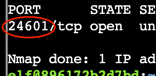

Intro to Nmap

Network discovery is the bedrock of penetration testing, and this challenge takes us back to basics. We need to demonstrate mastery over Nmap to identify services hidden on a custom motorcycle rig.
Challenge Overview
We locate Eric in the parking lot where he has turned his motorcycle into a mobile wardriving station. He tasks us with a series of network scanning exercises to prove we can identify open ports and services within his local environment. This serves as a practical exam on the fundamentals of port enumeration and banner grabbing.
1. Default TCP Scan
1) When run without any options, nmap performs a TCP port scan of the top 1000 ports. Run a default nmap scan of 127.0.12.25 and see which port is open.
The first task requires us to find an open port on 127.0.12.25 using a standard scan.
elf@86b417cb1ae8:~$ nmap 127.0.12.25
Starting Nmap 7.80 ( https://nmap.org ) at 2026-01-05 22:29 UTC
Nmap scan report for 127.0.12.25
Host is up (0.000065s latency).
Not shown: 999 closed ports
PORT STATE SERVICE
8080/tcp open http-proxy
Nmap done: 1 IP address (1 host up) scanned in 0.13 seconds
2. Full Port Scan
2) Sometimes the top 1000 ports are not enough. Run an nmap scan of all TCP ports on 127.0.12.25 and see which port is open.
The default scan missed the target port. We need to scan all 65,535 TCP ports to find the hidden service. The -p- flag tells Nmap to scan everything from port 1 to 65535.
elf@86b417cb1ae8:~$ nmap 127.0.12.25 -p-
Starting Nmap 7.80 ( https://nmap.org ) at 2026-01-05 22:30 UTC
Nmap scan report for 127.0.12.25
Host is up (0.000064s latency).
Not shown: 65534 closed ports
PORT STATE SERVICE
24601/tcp open unknown
3. Scanning IP Ranges
3) Nmap can also scan a range of IP addresses. Scan the range 127.0.12.20 - 127.0.12.28 and see which has a port open.
We need to sweep a range of IP addresses to see which host has a port open. Nmap allows us to specify the last octet as a range.
elf@86b417cb1ae8:~$ nmap 127.0.12.20-28
Starting Nmap 7.80 ( https://nmap.org ) at 2026-01-05 22:33 UTC
Nmap scan report for 127.0.12.20
Host is up (0.00073s latency).
All 1000 scanned ports on 127.0.12.20 are closed
Nmap scan report for 127.0.12.21
Host is up (0.00093s latency).
All 1000 scanned ports on 127.0.12.21 are closed
Nmap scan report for 127.0.12.22
Host is up (0.00066s latency).
All 1000 scanned ports on 127.0.12.22 are closed
Nmap scan report for 127.0.12.23
Host is up (0.00065s latency).
Not shown: 999 closed ports
PORT STATE SERVICE
8080/tcp open http-proxy
Nmap scan report for 127.0.12.24
Host is up (0.00074s latency).
All 1000 scanned ports on 127.0.12.24 are closed
Nmap scan report for 127.0.12.25
Host is up (0.00082s latency).
All 1000 scanned ports on 127.0.12.25 are closed
Nmap scan report for 127.0.12.26
Host is up (0.00072s latency).
All 1000 scanned ports on 127.0.12.26 are closed
Nmap scan report for 127.0.12.27
Host is up (0.00071s latency).
All 1000 scanned ports on 127.0.12.27 are closed
Nmap scan report for 127.0.12.28
Host is up (0.00073s latency).
All 1000 scanned ports on 127.0.12.28 are closed
Nmap done: 9 IP addresses (9 hosts up) scanned in 0.57 seconds
4. Service Version Detection
4) Nmap has a version detection engine, to help determine what services are running on a given port. What service is running on 127.0.12.25 TCP port 8080?
elf@86b417cb1ae8:~$ nmap -sV 127.0.12.25 -p 8080
Starting Nmap 7.80 ( https://nmap.org ) at 2026-01-05 22:34 UTC
Nmap scan report for 127.0.12.25
Host is up (0.000078s latency).
PORT STATE SERVICE VERSION
8080/tcp open http SimpleHTTPServer 0.6 (Python 3.10.12)
Service detection performed. Please report any incorrect results at https://nmap.org/submit/ .
Nmap done: 1 IP address (1 host up) scanned in 6.66 seconds
5. Banner Grabbing with Netcat
5) Sometimes you just want to interact with a port, which is a perfect job for Ncat! Use the ncat tool to connect to TCP port 24601 on 127.0.12.25 and view the banner returned.
Finally, we need to interact directly with the service found in step 2 (port 24601). While Nmap is for scanning, ncat (or nc) is used to read and write data across network connections. We connect to the port to trigger the welcome message.
elf@86b417cb1ae8:~$ nc 127.0.12.25 24601
Welcome to the WarDriver 9000!
Challenge Reference Material
Challenge Descriptions
Classic Mode Description
Meet Eric in the hotel parking lot for Nmap know-how and scanning secrets. Help him connect to the wardriving rig on his motorcycle!
CTF Mode Description
Speaking of tools, let me introduce you to one of the most essential weapons in any pentester's arsenal: Nmap. It's like having X-ray vision for networks, and I've set up a perfect environment for you to learn the fundamentals. Help me find and connect to the wardriving rig's service on my motorcycle!
Official Hints
- Nmap is pretty straightforward to use for basic port scans. Check out its documentation!
- You may also want to check out the Ncat Guide.